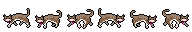
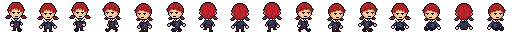

A character is anything in your game that moves around and bumps into the world — the hero you steer, an enemy that chases you, a townsperson who wanders. In Godot Glass you build every one of them out of the same three simple pieces: the Character (the body that moves), a Driver (who steers it — you, or the game's own brain), and a Look (how it's drawn on screen). Snap those three together and you have a character — for a top-down adventure, a side-scrolling shooter, a puzzle game, anything. This guide shows you how, with two real games as worked examples.
The hero and the enemies in your game are the same kind of thing underneath — a Character with a Driver attached. Put a Player Driver on it and you steer it. Put an AI Driver on it and the game steers it. Same body, swap the driver. That one idea is the whole system.
The three pieces of a character
Whenever you make a character, you're really just choosing these three things:
- The Character the body
- The thing that actually moves and collides with the world. It carries the basics every moving thing needs — a position, a speed, which way it's facing, and a little bump-shape so it doesn't pass through walls. It knows nothing about who is steering it or how it looks; those are the other two pieces. You add one to your scene wherever you want a character to exist.
- The Driver who steers
- A small helper you drop onto the Character that answers one question every moment: "which way should I move right now?" The Player Driver answers by reading your controls (the arrow keys, a thumbstick). The AI Driver answers with a simple brain (fly left, weave, chase). Whichever one is attached decides whether this is your character or the game's.
- The Look how it's drawn
- The pictures that show on screen as the character moves. Glass gives you ready-made walking looks for adventure-style characters, or you can give a character its own custom look for anything unusual. The Look just watches the body move and draws to match — it never gets in the way.
The "Inspector" is the settings panel down the side of the editor that shows the options for whatever you've clicked on. Whenever this guide says "set its speed" or "pick its look," that's where you do it — in the Inspector, with plain boxes and dropdowns. No typing code.
Build a character, step by step
- Add a Character to your scene. In the scene's Add menu, choose a Character (the flat, 2D kind for a side-on or top-down game; the 3D kind for a 3D world). It drops in as an empty body — no look yet, nobody steering it.
- Give it a Driver. Add a Driver onto the Character. Choose the Player Driver if this is the character the person playing will steer, or the AI Driver if the game should steer it (an enemy, a wandering animal). That single choice is what makes it "the player" or "a character in the world" — there's no separate "this is the hero" switch to hunt for.
- Give it a Look. Either pick one of the ready-made walking looks (next section) and hand it your picture sheet, or attach the character's own look if it animates in a special way. Set how fast it moves while you're here.
- Drop it where it starts. Place the Character where you want it to begin — or let your level's flow place it (see the Flow guide). Press Play; your character is alive.
Press Play and the character is steered the way its Driver says — you move it with the arrow keys (Player Driver) or it moves on its own (AI Driver) — while its Look animates to match. Walls stop it; it can bump other things. That's the whole character, from three pieces.
Choosing the Look
For characters that walk around a world (heroes, townsfolk, enemies on foot), Glass gives you three ready-made walking looks. They differ only in how rich the animation is — and Glass picks the right one for you automatically from how many pictures are on your sheet, so most of the time you just hand over the sheet and you're done.
- Simple tiny sheet
- A handful of frames that flip back and forth. Perfect for a one-off background creature or a critter you'll only see for a moment. The cheapest, easiest look.
- Basic the workhorse
- A fuller walk in every direction, built from a modest sheet. This is what most of your everyday characters use — the shopkeepers, the guards, the crowd.
- 8-direction the star
- The richest look: a full set of walk, idle, and run animations facing all eight directions. Reserve it for your hero and the important characters who deserve the extra polish.
Some characters animate in a way the walking looks can't describe — stacked layers, a firing pose, special effects. That's fine: give the character its own custom look instead, and Glass simply steers the body and stays out of the drawing entirely. You never have to force an unusual character into a walking look.
The picture sheets — exactly what goes where
A walking look reads your art from a sheet: one long horizontal strip of equal square frames, laid left to right. Glass figures out which look to use by a dead-simple rule — it counts the frames (the strip's width divided by its height) and matches that count to a look. So you mostly just draw the right number of frames and drop the sheet in. Here are three real sheets from a game, blown up so each frame is clear — scroll sideways to walk through the strip, and read the map under each one for exactly what every frame is.
All three strips below are actual art from the flagship game, shown pixel-for-pixel (nothing smoothed). Copy the frame counts and layouts to make your own.
Simple — 6 frames

↔ Two little walk cycles — one facing right, one facing left. That's the whole sheet.
- 0–2 Facing right (used for every right-, up-, and down-leaning direction). The middle frame (1) is the standing-still pose.
- 3–5 Facing left. Middle frame (4) is standing still.
Perfect for a background animal or a character you only glimpse. Cheapest to draw.
Basic — 12 frames (or 16 with sitting)

↔ Four 3-frame walk cycles (one per cardinal direction), then four optional sitting poses.
- 0–2 Walk down (toward you). Middle frame (1) = standing still.
- 3–5 Walk left (also used for both left diagonals). Middle = (4).
- 6–8 Walk up (away). Middle = (7).
- 9–11 Walk right (also both right diagonals). Middle = (10). Left and right are drawn separately — no mirroring.
- 12–15 Optional: four sitting poses (down, left, up, right). Leave these off and you have a 12-frame sheet; add them for 16.
This is what most townsfolk, shopkeepers, and walking characters use.
8-direction — 89 frames (or 101, the full set)
↔ The big one — full walk, run, and swim cycles facing every direction. Keep scrolling.
- 0–14 Walk, all directions: down (0–2), the diagonals (3–5), left (6–8), the up-diagonals (9–11), up (12–14). One frame in each little group is the standing pose.
- 15–23 Optional: dedicated right-facing walk art — only for characters whose art can't be mirrored. Most reuse the left art flipped, so you can skip these.
- 24–43 Run, same directions as the walk block.
- 44–55 Optional: right-facing run art (same mirror exception as above).
- 56–59 Out-of-breath (played when a character is winded).
- 73–92 Swim, same directions.
Reserve this for your hero and important characters. The full set is 101 frames; trim the tail (some swim/run) for an 89-frame version.
Notice the 8-direction sheet only draws characters facing down and left. The right-facing directions reuse that same art, flipped — so you draw one side and Glass mirrors it. You only draw separate right-facing frames for art that looks wrong mirrored (a logo on one sleeve, a side part in the hair); those are the optional blocks above.
So, how many frames do I need?
- 1 Still no motion
- A single frame. A sign, a training dummy — anything that never animates.
- 6 Simple
- Two walk cycles, right and left. Critters and one-offs.
- 12 / 16 Basic
- Four cardinal walk cycles; 16 adds the four sits. Everyday characters.
- 89 / 101 8-direction
- Walk, run, swim, every direction. Heroes and stars.
Right now Glass recognises a look by these exact frame counts, and expects one horizontal strip. A planned setting will let you define your own — your own counts, or sheets laid out in rows-and-columns instead of one strip — so the rules fit how your game's art is drawn, not just this example game's. Until then, you can always set a character's look by hand instead of relying on the count.
Flat 2D, 2.5D, or true 3D
The looks above work the same whether your game is flat or has depth — what changes is where the picture lives:
- Flat 2D top-down / side-on
- The picture is a plain flat drawing, like an old-school 2D game. The walk looks and the exact sheets above apply unchanged — same frame counts, same layout.
- 2.5D pictures in a 3D world
- The character is still a drawn picture, but it stands up in a 3D world and always turns to face the camera (so it reads as 3D while staying hand-drawn). Same sheets, same counts — this is exactly what the example game above does.
- True 3D model no sheet at all
- The character is a real 3D model instead of a picture. There's no sheet and none of the frame rules apply — instead you give the model its own walk, idle, and run animations, and the look plays them by name. Use this if you want fully 3D characters; everything else about a character (who steers it, where it starts, how it reacts) works exactly the same.
You're Gonna Be Famous is 2.5D (hand-drawn sheets that face the camera). Beautiful Broomstick Buster is flat 2D (the witch is drawn flat). Neither uses 3D models — but a game that wanted them would just give its characters the 3D-model look instead of a sheet, and keep everything else identical.
Two real characters, side by side
The same three pieces make wildly different characters in completely different games. Here are two from the games Glass is built alongside — engine pieces in plain text, the game-specific choices clearly marked.
The hero you walk around town is a Character + a Player Driver + the 8-direction look — so they turn and stride smoothly whichever way you point them. The townspeople and guards are the very same Character, but with an AI Driver (wander, patrol, give chase) and the lighter Basic or Simple look. Hero, friend, and foe are all one kind of thing wearing different pieces.
The witch on her broom is a Character + a Player Driver — but her animation is special (five stacked layers — broom, body, legs, dress, hair — with a whole firing sequence), so she keeps her own custom look instead of a walking one. Glass moves her; her look draws itself. The enemies she shoots are Characters with an AI Driver (fly in, weave). Notice: a shooter never uses the walking looks at all — and that's the point. The pieces fit any genre because you only take the ones you need.
Player or game-controlled — just swap the Driver
Because the Driver is a separate little piece sitting on the Character, you change who's in control by changing which Driver is attached — nothing about the body, the look, or the speed has to change.
- Player Driver — reads the player's controls and steers the body. Its presence is what marks a character as "the player," so other things in your game (a camera that follows the hero, a door that only the player opens) can find it without you wiring anything up by hand.
- AI Driver — runs a simple movement brain instead of reading controls. Comes with ready patterns (go straight, weave side to side) and is the starting point for enemies and wandering characters.
Want to test a level by flying an enemy yourself? Swap its AI Driver for a Player Driver for a minute. Want a "ghost" replay of the hero? The reverse. Same character, different hand on the wheel.
Making characters drive the story
A character can announce things to your level when something happens to it — most usefully, when it's defeated. You hand the character a little message to send on defeat, and your level listens for that message and reacts. This is the same flow events system the Flow guide covers, so the level intro, the doors, and the characters all speak the same language.
In Beautiful Broomstick Buster, the boss is just a tougher Character whose "defeated" message is "end the level." When you finally shoot it down, it sends that message, the level hears it and rolls the win screen. There's no special "boss" code anywhere — only a Character with a message and a level that's listening. Swap the message and any character's defeat could open a gate, start a cutscene, or spawn the next wave instead.
Go further: invent your own Driver
You almost never need this — the Player and AI Drivers cover most games. But if you like to tinker, it's worth knowing how little a Driver actually is, because it's the most fun thing to customize.
A Driver answers exactly one question each moment: "which way should I move right now?" — given back as a direction (left, up-and-right, nowhere). That's the entire job. A homing missile Driver points at the player. A scared-animal Driver points away from you. A patrol Driver paces between two spots. Each is just a different answer to that one question, so you can dream up new movement behaviour without touching the Character or its Look at all. (This is the one place a little typing comes in; everything else in this guide is done with the plain settings panel.)